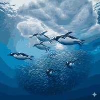

About Gentoo Penguins

Gentoo penguins are easily recognized by the white stripe across their head and their bright orange beak. They are the third largest penguin species.
Habitat

Gentoo penguins live on sub-Antarctic islands and the Antarctic Peninsula. They prefer ice-free coastal areas where they build nests using stones, grass, and feathers.
Diet

Gentoo penguins mainly eat fish, krill, and squid. They are known as the fastest swimming penguins and can reach speeds up to 36 km per hour.
Interesting Facts
- Gentoo penguins can swim faster than any other penguin species.
- They use stones to build strong nests.
- They are very social and live in colonies.
- They have bright orange feet and beak.